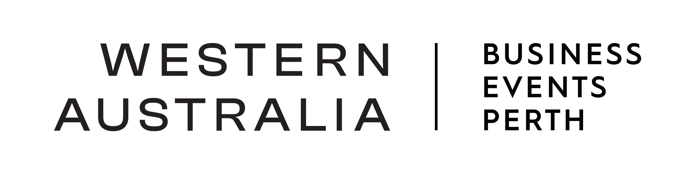
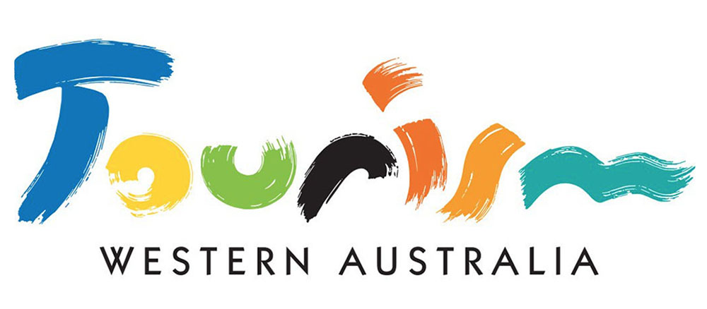
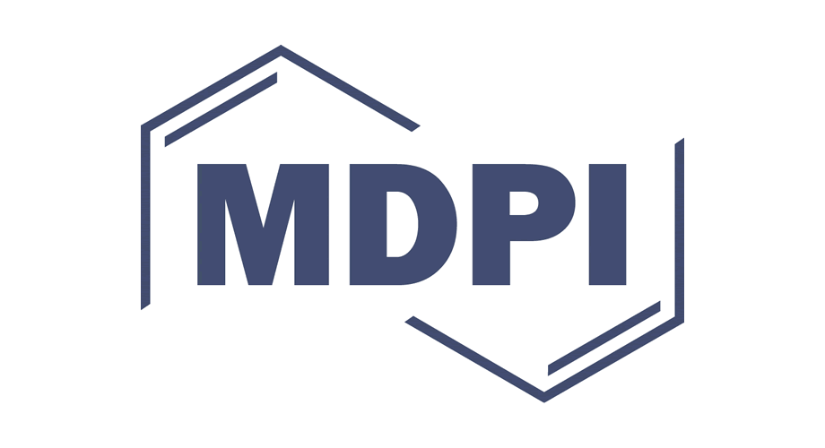
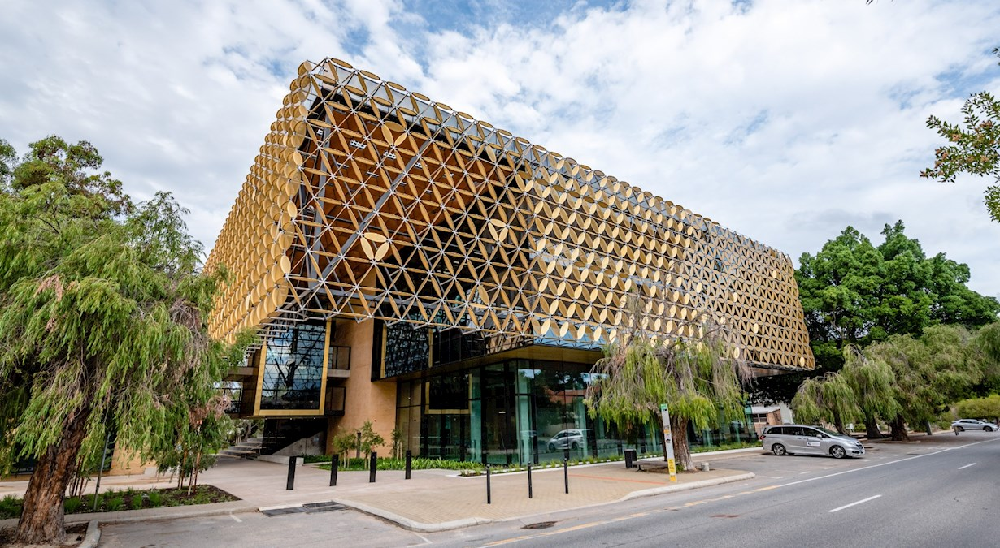
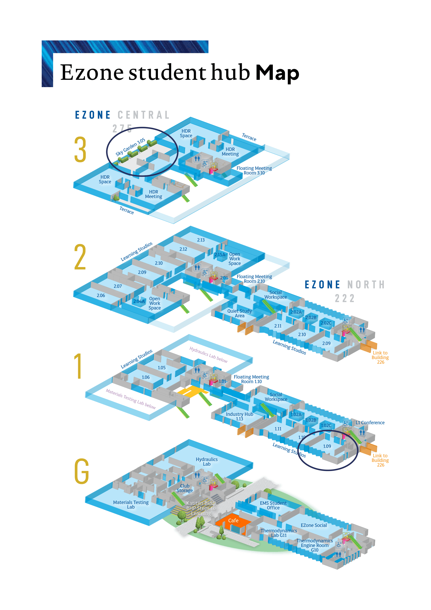
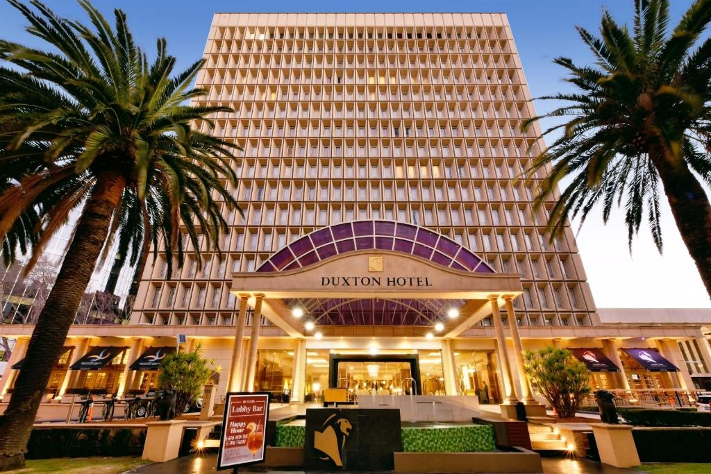

- Home
- Call for Papers
- Program Committee
- Registration
- Accepted Papers
- Technical Program
- Keynote Speakers
- Conference Venue
- Sponsors
- Contact Us



ACISP 2026
Venue
More details about the conference venue, including directions, accommodation options, and local attractions, will be provided here as the conference date approaches.
ACISP 2026 will be held at EZONE Central, University of Western Australia, 35 Stirling Highway, Crawley, Western Australia, 6009.

Location
Getting There
EZONE UWA Student Hub is located on th western side of The University of Western Australia’s Crawley campus, on Fairway. The campus is accessible by public transport, car, bicycle, and rideshare/taxi.
Public Transport
UWA is served by several Transperth bus services. Common services to the UWA campus include the 998 and 999 CircleRoute buses, as well as routes 23, 24, 96, and 950. Attendees are encouraged to use the Transperth JourneyPlanner for the most up-to-date route and timetable information.
Campus Maps and Accessibility
UWA provides transport and parking information and campus maps (EZONE Central is marked on this map as Building 275), including information on accessible bays, bicycle parking, and visitor access. More detailed ACISP 2026 wayfinding information will be provided closer to the conference.
EZONE Central Floor Plan
The floor plan below shows Level 2 of EZONE Central, where the main conference rooms are located. Rooms 209 and 210 will be used for keynote and large sessions, while Rooms 206 and 207 will be used for paper presentations and parallel sessions.

An interactive map of the UWA campus is provided below. More detailed ACISP 2026 wayfinding information will be provided closer to the conference.
Accommodation

ACISP 2026 attendees may wish to consider the following accommodation option, for which a special conference rate has been arranged.
Duxton Hotel Perth
1 St Georges Terrace, Perth WA 6000
A discounted rate of AUD 275 per night is available for a Deluxe Room, subject to availability.
Attendees can book using the following link:
Book accommodation at Duxton Hotel Perth
Access code: CORUWA
Participants are encouraged to book early to secure the conference rate.
Getting to the Venue from Duxton Hotel Perth
Duxton Hotel Perth is located in the Perth CBD, approximately 10–20 minutes from EZONE UWA by car or rideshare, depending on traffic.
Attendees may also use public transport to travel between the hotel and the UWA Crawley campus. Please refer to the directions and transport information above for further details.
Directions from Duxton Hotel to EZONE UWA Plan public transport journey
For more information about campus access and wayfinding, please refer to the venue maps and transport information above.